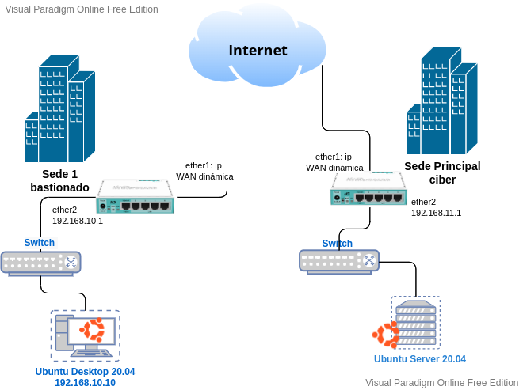
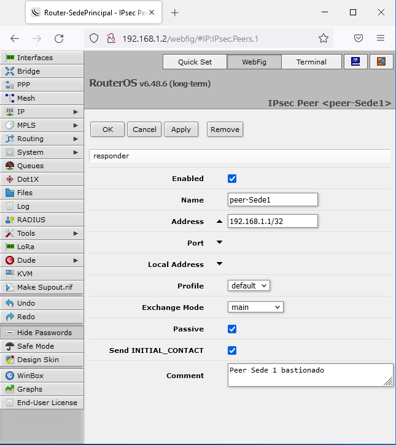
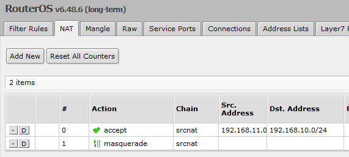
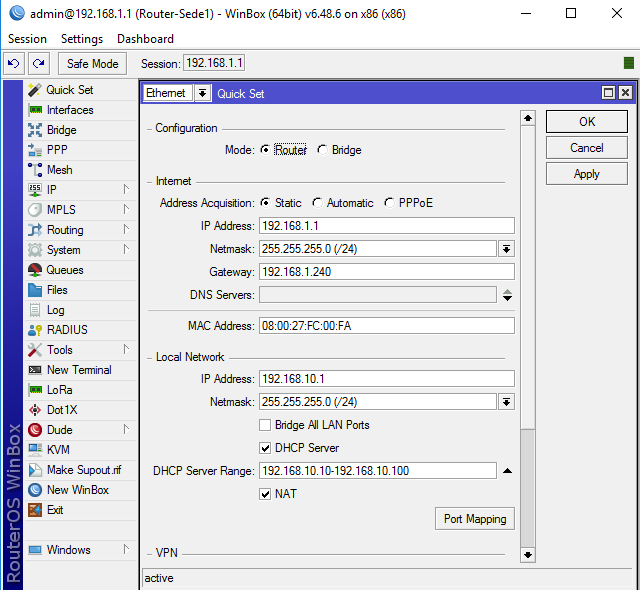

1.1 Túneles (protocolo VPN IPSec)
1. VPN de router a router utilizando MikroTik
En esta capítulo se va a implementar una VPN (tipo router a router) entre dos sedes de una empresa mediante un túnel implementado con IPsec.
2. Escenario y esquema de red
En las figuras inferiores se tienen el escenario real y el virtualizado. Los componentes del esquema virtualizado son:
- Routers Mikrotik.
- Sede principal ciber.
- Sede 1 bastionado.
- Equipo para unir la infraestructura de red entre sedes con internet.
- Equipo Ubuntu Server servidor SSH.
- Ubuntu Desktop para implementar el acceso de un cliente.
- PC físico encargado de configurar los componentes de la red.
|  | |
| Figura 1. Escenario Real. | Figura 2. Escenario Virtualizado. |
3. Configuración de los routers
3.1 Router WAN/LAN (internet)
Se configura la red WAN (ether1) en dinámico para que el router del proveedor de internet le proporcione la configuración tcp/ip. Por otro lado, se configura una ip estática en la red LAN (ether2) 192.168.1.240/24 y se chequea NAT para añadir la regla masquerade (enmascarar la dirección IP de los equipos de la red interna para que puedan «salir» a internet y además, que el tráfico sepa después «volver».)
3.2 Router Sede Principal Ciber
1. QuickSet
Se configura la ip estática 192.168.1.2 para la interfaz WAN (ether1) dentro de la subred 192.168.1.0/24 LAN del router Router WAN/LAN (internet). Por otro lado, el gateway y DNS es la ip de la red LAN (ether2) del router WAN/LAN (internet). Respecto a la interfaz LAN (ether2), se configura la ip 192.168.11.1/24. Se configura el servidor DHCP y el NAT.
2. Configurar IPSec
Hay que acceder a la opción del menú Ip > IPsec para añadir una nueva política. Las acciones a realizar son:
1. Acceder a la pestaña Peers. Hay que crear un nuevo Peer, es decir, indicar quién va a estar al otro lado del túnel. Los campos a configurar son:
- Name: peer-Sede1 (nombre identificativo del peer).
- Address: 192.168.1.1 (dirección ip de la red WAN del router de la Sede 1).
- Comment: Peer Sede 1 bastionado.
El resto de opciones se dejan por defecto.
2. Acceder a la pestaña Identities. Hay que crear una nueva Identity en la que hay que indicar el peer y Secret (cómo se va a realizar la autenticación). Los campos a configurar son:
- Enabled: Hay que chequearlo..
- Peer: peer-Sede1.
- Secret: Establecer una cadena de texto compleja para el secreto compartido que permitirá la validación entre routers para el establecimineto del túnel.
- Comment: Identities con Sede 1.
El resto de opciones se dejan por defecto.
3. Acceder a la pestaña Policies. Hay que añadir una nueva política donde los campos a configura son:
- Enabled: Hay que chequearlo..
- Peer: peer-Sede1.
- Tunnel: Hay que chequearlo.
- Src. Address: 192.168.11.0/24. Indicar la dirección de red del router de la sede Principal.
- Dst. Address: 192.168.10.0/24. Indicar la dirección de red del router (Sede 1) al que se quiere enviar el tráfico por el túnel que se va a realizar con IPsec.
- Action: encrypt.
- Comment: IPSec Sede principal.
|  | ||
| Configuración Peer | Configuración Identities | Configuración IPSec |
3. Configurar Firewall
Hay que acceder a la opción IP > Firewall, pestaña NAT para añadir una regla para indicar que no se aplique el enmascaramiento entre las redes (router to router) con los siguientes campos:
- Chain: srcnat.
- Src. Address: 192.168.11.0/24 (dirección de red del router de la sede Principal).
- Dst. Address: 192.168.10.0/24 (dirección de red del router de la sede 1).
- Action: accept.
El resto de opciones se dejan por defecto y se pulsa en Ok. Por último, la regla creada hay que subirla a la primera posición de la lista para que sea la primera que se evalúe

3.3 Router Sede 1 Bastionado
1. QuicSet
Se configura la ip estática 192.168.1.1 para la interfaz WAN (ether1) dentro de la subred 192.168.1.0/24 LAN del router Router WAN/LAN (internet). Por otro lado, el gateway y DNS es la ip de la red LAN (ether2) del router WAN/LAN (internet). Respecto a la interfaz LAN (ether2), se configura la ip 192.168.10.1/24. Se configura el servidor DHCP y el NAT.

2. Configurar IPSec
Hay que acceder a la opción del menú Ip > IPsec para añadir una nueva política. Las acciones a realizar son:
1. Acceder a la pestaña Peers. Hay que crear un nuevo Peer, es decir, indicar quién va a estar al otro lado del túnel. Los campos a configurar son:
- Name: peer-SedePrincipal (nombre identificativo del peer).
- Address: 192.168.1.2 (dirección ip de la red WAN del router de la Sede Principal).
- Comment: Peer Sede Principal.
El resto de opciones se dejan por defecto.
2. Acceder a la pestaña Identities. Hay que crear una nueva Identity en la que hay que indicar el peer y Secret (cómo se va a realizar la autenticación). Los campos a configurar son:
- Enabled: Hay que chequearlo..
- Peer: peer-SedePrincipal.
- Secret: Establecer una cadena de texto compleja para el secreto compartido que permitirá la validación entre routers para el establecimiento del túnel.
- Comment: Identities con Sede Principal.
El resto de opciones se dejan por defecto.
3. Acceder a la pestaña Policies. Hay que añadir una nueva política donde los campos a configura son:
- Enabled: Hay que chequearlo..
- Peer: peer-SedePrincipal.
- Tunnel: Hay que chequearlo.
- Src. Address: 192.168.10.0/24. Indicar la dirección de red del router de la Sede 1.
- Dst. Address: 192.168.11.0/24. Indicar la dirección de red del router al que se quiere enviar el tráfico (Sede Principal) por el túnel que se va a realizar con IPsec.
- Action: encrypt.
- Comment: IPSec Sede 1.
| Configuración Peer | Configuración Identities | Configuración IPSec |
3. Configurar Firewall
Hay que acceder a la opción IP > Firewall, pestaña NAT para añadir una regla para indicar que no se aplique el enmascaramiento entre las redes (router to router) con los siguientes campos:
- Chain: srcnat.
- Src. Address: 192.168.10.0/24 (dirección de red del router de la sede 1).
- Dst. Address: 192.168.11.0/24 (dirección de red del router de la sede Principal).
- Action: accept.
El resto de opciones se dejan por defecto y se pulsa en Ok. Por último, la regla creada hay que subirla a la primera posición de la lista para que sea la primera que se evalúe.
4. Comprobaciones
En este apartado se van a realizar una serie de operaciones para comprobar la VPN entre dos equipos conectados en las dos sedes.
4.1 Realizar ping router to router
En primer lugar se realiza un ping desde el router de la sede principal a la sede 1 pero a las direcciones privadas de los mismos. Los campos a completar son los siguientes:
- Ping To: 192.168.10.1 (dirección ether2 de la Sede 1)
- Src. Addess: 192.168.11.1 (dirección ether 2 de la Sede Principal, desde donde se hace el ping).
Ahora, se realiza la prueba al contrario, desde el router de la Sede 1 al router de la Sede Principal. Los campos a completar son los siguientes:
- Ping To: 192.168.11.1 (dirección ether2 de la Sede Principal)
- Src. Addess: 192.168.10.1 (dirección ether 2 de la Sede 1, desde donde se hace el ping).
4.2 Comprobar conectividad con los equipos entre sedes
Desde un equipo Ubuntu Desktop en la Sede 1, se realiza una serie pings a todas las interfaces de los routers y com ose puede observar, se contesta a las peticiones sin problemas.
Desde este mismo equipo Ubuntu Desktop en la Sede 1, se realiza una conexión ssh con el servidor HTTP (perseo) ubicado en la sede Principal. Como se puede observar en la figura inferior, se accede al servidor ubicado en la otra sede con capacidad de administración del mismo.
Obra publicada con Licencia Creative Commons Reconocimiento No comercial Compartir igual 4.0